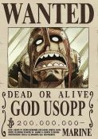

Selecione um personagem
- 

Luffy
Luffy é o capitão dos Piratas do Chapéu de Palha. Quando criança, ele comeu uma Gomu Gomu no Mi, uma fruta que lhe deu o poder do homem-borracha em troca de sua habilidade de nadar. O jovem sonha em se tornar o Rei dos Piratas, título que ninguém ocupa desde a execução de Gol D.Roger